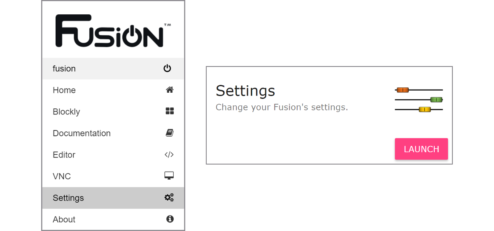
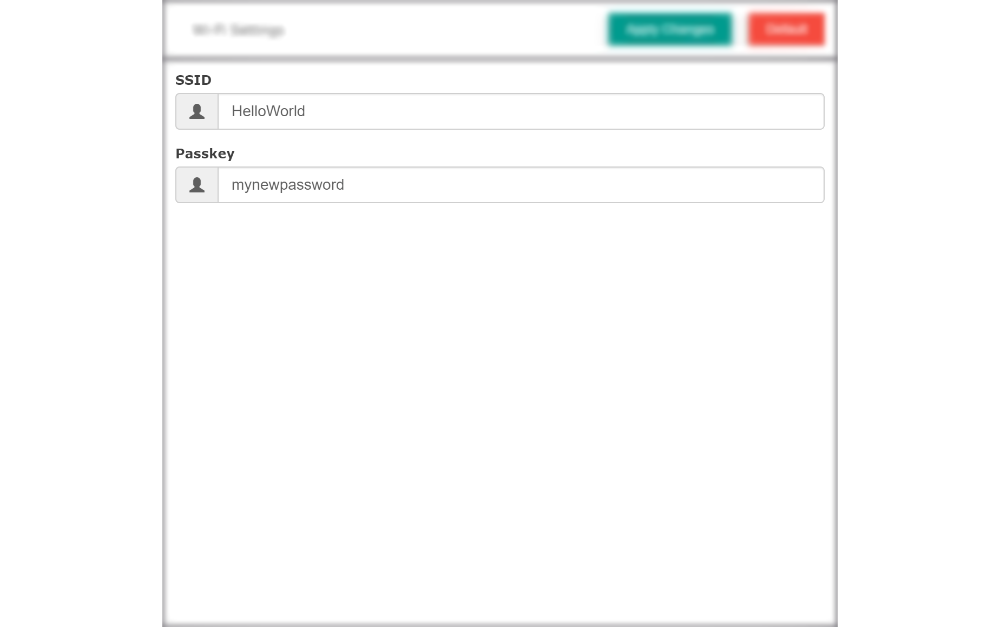
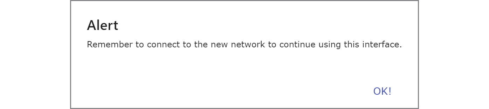
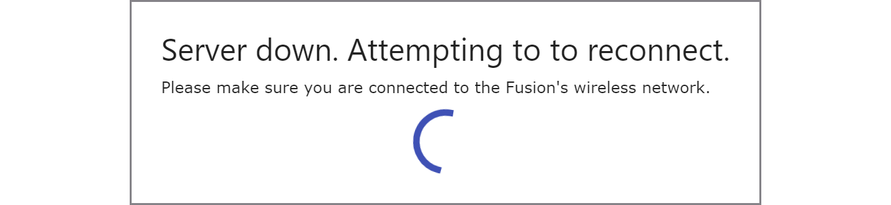

Change Fusion Access Point SSID and Passkey
Custom access point and passkey
Each Fusion has its own unique access point name, or Service Set Identifier (SSID), and share a common passkey. There is an option in the settings menu to change your SSID and passkey.
1. Open the Fusion settings from the hamburger menu on the left or the settings box on the home page. 
2. Navigate to the Wireless menu.
3. In the Wi-Fi Settings section, enter in a new SSID and passkey into the corresponding text boxes.
Example:
SSID: HelloWorld
Passkey: mynewpassword 4. Click the change button to apply the changes to your Fusion.
5. Alert! Your Fusion will restart and turn back on with the new SSID and Passkey. Select "OK" to reboot. 
6. The Fusion server will shutdown and you will need to reconnected with the new credentials entered in Step 3 after the Fusion restarts.  For instructions on connecting to the Fusion Access Point, refer to the following links.
Can't connect to new access point
If you changed your SSID and Passkey and are now unable to connect to your Fusion, a few things could have gone wrong.
1. Power off your Fusion and then turn it back on. Then attempt to connect to the Fusion using your credentials.
2. If that is still not working, you may have accidentally entered your password incorrectly or the caps lock on when you entered in the new password.
- Follow the instructions to Restore SSID and Passkey to default using the supplied System Recovery Wire.
If any problems arise
Contact Modern Robotics, Inc. at support@modernroboticsinc.com with a detailed description of the steps you have taken and observations you have made.
Email Subject: Change Fusion Access Point
{kind=link}